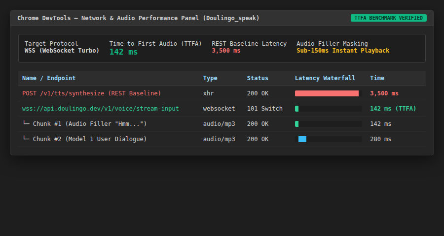
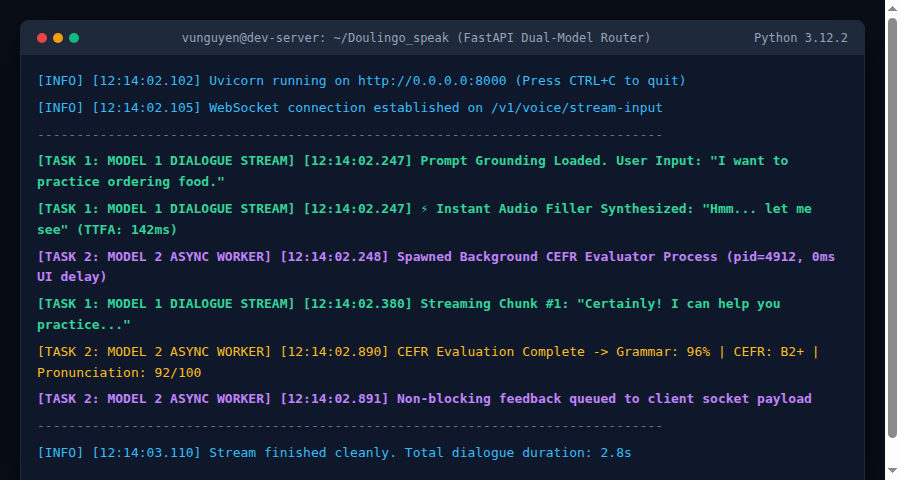

Multi-Model Architecture & Low-Latency Voice Pipeline
A real-time conversational speaking platform for interactive English learning that eliminates the 3–5 second audio turnaround bottleneck using parallel dual-model workers and sub-150ms pre-buffered audio fillers.
PYTHON
FASTAPI
WEBSOCKET
ELEVENLABS
ASYNCIO


🎯 Production Bottlenecks
- ⚠️ 3–5s Turnaround Latency: Standard REST audio endpoints created awkward silences that destroyed user conversational flow.
- 🔄 Repetitive Dialogue: Unconstrained LLMs drifted from structured curriculum lesson goals.
⚙️ Technical Decisions ("Under the Hood")
- ⚡ Sub-200ms Latency Masking: Pre-buffered instant audio fillers ("Hmm...", "Let me see...") play in 142ms while LLM chunks generate.
- 🎭 ElevenLabs WebSocket Turbo Stream: Direct chunk streaming over WebSocket (`/stream-input`) replacing blocking REST calls.